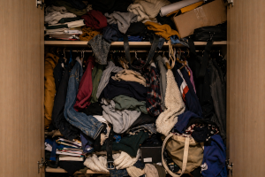

Phenomenon of Closet Overfilling

| Type | Domestic storage anomaly |
| Participants | 1 closet, unlimited items, 1 optimistic human |
| Outcome | Sudden structural overflow |
| Main feature | More items inside than physically possible |
| Reliability | Guaranteed over time |
The Phenomenon of Closet Overfilling describes the gradual accumulation of objects inside a storage space until it exceeds its physical limits, while still appearing “not that full” from the outside.
The phenomenon is most commonly observed in wardrobes, drawers, boxes, and shelves. Subjects consistently believe that “there is still some space left”, even when evidence strongly suggests otherwise.
Mechanism
The primary mechanism involves continuous addition of items combined with a delayed perception of capacity limits. Each new item is evaluated individually and accepted under the assumption that it “won’t make a difference”.
The phenomenon is indirectly connected to the Law of Sudden Object Disappearance , as items placed inside the closet often become temporarily unobservable, encouraging further accumulation.
- space appears larger than it actually is;
- items compress beyond expected limits;
- visibility decreases as density increases;
- removal becomes increasingly difficult.
Stages
- Empty stage. The closet is organized and functional.
- Filling stage. Items are added normally.
- Optimization stage. Items are rearranged to “fit more”.
- Compression stage. Objects are pushed into available gaps.
- Critical stage. The door barely closes.
- Overflow event. Opening the closet causes item release.
Effects
- loss of accessible space;
- difficulty locating items;
- unexpected object avalanches;
- increased belief that organization is “planned for later”.
In extreme cases, objects may fall out immediately upon opening, creating the illusion that the closet is actively resisting access.
Scientific debates
Some researchers believe this phenomenon is purely behavioral, while others argue that closets possess a weak form of spatial distortion, allowing them to contain more items than expected.
A controversial theory suggests that closets actively encourage accumulation by hiding existing contents from view.
Classification
- Minor case. Slight overcrowding.
- Moderate case. Difficulty closing the door.
- Severe case. Items fall when opened.
- Critical case. Closet becomes permanently unstable.
The most dangerous subtype is the seasonal compression event, when items are stored “temporarily” and never removed.